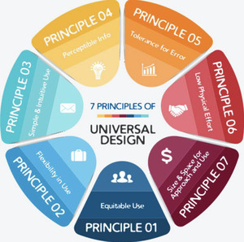
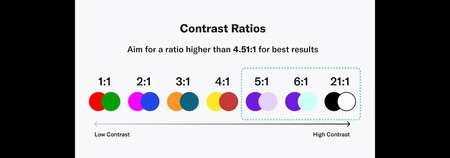

How do you do Universal Design?
Universal isn't necessarily as simple as “do this ONE thing and you will have a perfectly universal website”, but is rather multiple things that can help you build a more accessible website design
Know the Principles:
As mentioned in the “What?” section, the 7 principles of universal design (equitable use, flexibility in use, simple and intuitive use, perceptible information, tolerance for error, low physical effort, size and space for approach and use) are the core of universal design. Being conscious and aware of these 7 principles when creating your website can help to make your website universal from the start.
Mobile First:
Most people use their phones as their main devices to connect to the internet, whether they choose to or not. Designing your websites to be viewed on mobile devices first not only casts a net on the largest market first, but also allows for easier reverse engineering of an accessible mobile website to a desktop website, as opposed to going from being built for desktop to mobile.
A good way of doing this is by using CSS Grid. Grids are an easy way to provide the best possible viewing experience depending on the screen size, while not compromising on the content of your website.
Good Contrast, Good Spacing:
Having good contrast between text color and background color is beneficial to those with visual disabilities and to those who don't. A good rule of thumb is to make sure the color contrast between text and the background is 4.5:1 or greater.
Along with this, making sure text isn't too cluttered and is spaced out is beneficial to the eyes of everyone. Having text be too close to other text is at best difficult for someone to read and at worst impossible for someone to read
Semantic HTML
Clean, well written, well planned semantic HTML helps screen readers navigate while providing better visual hierarchy, stucture, and order to your website. Some examples of semantic HTML include, but isn't limited to:
- <article> for self-contained content
- <aside> for content such as side bars
- <details> for additional details
- <figcaption> for adding cations to figure elements
- <figure> for self contained content like images
- <footer> for defining a footer section
- <header> for defining introductory content
- <main> for specifying the main content
- <mark> for highlighting text
- <nav> for defining navigation links
- <section> for defining a section within a document
- <summary> for adding headings to a detail element
- <time> for adding specific dates and times
Screen Reader Friendly:
For those who are blind or have some sort of visual disability, screen readers are essential to navigating the internet. Making sure your websites are built to be screen reader friendly is vital for screen reader users. Some practices that help screen readers include, but isn't limited to:
Skip Nav: This is a simple function that can be coded into your website where, on click, will take the user past navigation as straight to the main content of the page. This can be coded to not be visible under normal circumstances, but is available to those with either screen readers or use tab-navigation.
Accessible Tables: Tables can be difficult for screen readers to read, so make sure that a screen reader can read the table in the intended viewing order. Screen readers typically read by row, so if you want to make a simple yet accessible table, try designing them to be read by row rather than by column.
For best results, try testing out your website with a screen reader and see how easy it is to navigate your website. The only way to know how a screen reader will read your website is to use a screen reader yourself
Research, Talk To those in need:

More often than not, it's hard for people who lack some sort of impairment or disability to understand what someone with one needs or wants, even if they do care and want to be helpful. Therefore, it's vital to make sure you talk to those who are impaired and see what they find useful or beneficial. It's one thing to know what this one university says is important when creating universal design, but it's another to know what those with disabilities struggle with, what they want on websites, what would allow for a better user experience, and so on. Feedback is necessary whether it comes from someone with perfect vision, mobility, hearing, or someone who is blind, one handed, and hard on hearing, and to effectively listen and use those perspectives is the core of universal design
Practice, Practice, Practice:
Universal design is like art in many ways. You don't just watch 1 video on how to draw faces, or read how to design environments and suddenly you have it down, but rather you consistently practice and keep trying to implement them, and the same applies to Universal Design. It's one thing to read the 7 key elements of universal design, it's another to make those 7 elements instinctual At the end of the day, with some practice, you can design a better, more universal website than you did yesterday
These are just a few methods to help design better, more universal websites. There are many other steps that can help, but even just a few small steps can go a long way at creating more universal, more accessible websites for everyone.